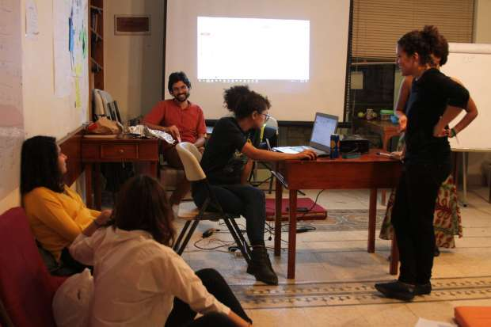

أحدث الأخبار
- باولو يقود هجوم الزمالك أمام رينجرز في دوري الأبطال
- المالية تعفي المطاعم غير السياحية من ضريبة القيمة المضافة بشروط
- "القضاء الإداري" يلزم الجامعة الأمريكية بتحصيل مصروفاتها بالجنيه المصري
- البورصة ترتفع بنسبة 0.52% في نهاية التعاملات
- إعادة فتح موانىء السويس بعد تحسن الأحوال الجوية
- محام: حفظ التحقيقات مع منى مينا في اتهامها بنشر أخبار كاذبة
- نجوى سالم .. كوميديانة انتهت حياتها بمأساة
- الأرصاد: طقس مائل للدفء الاثنين.. والعظمى في القاهرة 22
مصر أكثر الدول تدميرا للطبقة المتوسطة.. وإجراءات 2016 تضمن لها الصدارة
شهدت مصر أكبر تراجع للطبقة المتوسطة على مستوى العالم منذ بداية الألفية وحتى العام الماضي، بحسب بيانات بنك كريدي سويس المتخصص في تقدير الثروات، وتبدو هذه الطبقة معرضة لمزيد من التدمير نتيجة الإجراءات التقشفية التي تبنتها الحكومة هذا العام في إطار برنامج "الإصلاح الاقتصادي" الذي تبنته، وحصلت بموجبه على مجموعة من القروض الدولية.
أتوقع أن تشهد مصر أعلى موجة تضخمية في العصر الحديث.. فلم يكن لدينا هذا التنوع في السلع من قبل، كما لم نشهد هذه الحزمة من الإجراءات مُجتمعة
فقد تقلصت الطبقة المتوسطة في مصر بأكثر من 48%، لينخفض عددها من 5.7 مليون شخص بالغ في عام 2000، إلى 2.9 مليون بالغ في 2015، يمثلون الآن 5% فقط من إجمالي البالغين، ويستحوذون على ربع ثروة المصريين، بحسب كريدي سويس.
وكانت الحكومة أعلنت خلال العام الجاري عن مجموعة من القرارات الاقتصادية التي تمس مستوى معيشة المواطنين بشكل مباشر، بداية من زيادة أسعار الكهرباء في أغسطس الماضي، ثم فرض ضريبة القيمة المضافة على السلع والخدمات بنسبة 13% في سبتمبر، بدلا من ضريبة المبيعات التي بلغت 10%.
كما شهد نفس العام إعلان البنك المركزي عن تعويم الجنيه بشكل كامل في 3 نوفمبر، لتنخفض قيمة العملة المحلية للنصف تقريبا، ثم أعلنت الحكومة بعدها بساعات زيادة أسعار الوقود بنسب تتراوح بين 7.1% و87.5%.
وقال محللون وخبراء لأصوات مصرية إن الطبقة المتوسطة ستكون أكبر الخاسرين من تلك الإجراءات، متوقعين أن يقع جزء من المنتمين لهذه الطبقة في دائرة الفقر.
وتنافس مصر على صدارة العالم في تدمير الطبقة المتوسطة 4 دول، وهي الأرجنتين واليونان وروسيا وتركيا، بحسب تقرير كريدي سويس، لكن معدلات تآكل الطبقة المتوسطة في الدول الأربعة مازالت بعيدة عن الحالة المصرية، بفارق ملحوظ يصعب تضييقه خاصة بعد الإجراءات التقشفية الأخيرة في مصر.
ويُعرف كريدي سويس الطبقة المتوسطة بأنها الطبقة التي تمتلك من الأصول ما يجعلها صامدة أمام التغيرات الاقتصادية، وهي مُعرضة بشكل أقل لخطر الفقر، وفي الحالة المصرية فإن أعضاء نادي الطبقة المتوسطة هم الذين تتراوح ثرواتهم بين 14.5 ألف دولار و145 ألف دولار، وفقا لأسعار الدولار في 2015.
وتتوزع الثروات المشار إليها بين أصول مالية، كالأسهم والسندات والأرصدة البنكية وما شابهها، وأصول غير مالية مثل المنازل والأصول الإنتاجية وغير الإنتاجية.
وبحسب كريدي سويس، فإن حجم وموارد وصحة الطبقة المتوسطة هي مفاتيح تحديد مدى سرعة واستمرارية التنمية الاقتصادية في أي دولة، كما أن الطبقة المتوسطة تكون دائما في قلب الحراك السياسي والتوجهات الاستهلاكية الجديدة، وهم أيضا الممولين للمشاريع الاستثمارية ولرواد الأعمال.
ووفقا للمؤسسة الدولية، فإن تراجع ثروات الطبقة المتوسطة خلال السنوات الأخيرة يعود إلى انخفاض سعر صرف العملة المحلية وتراجع قيمة الأصول المالية وغير المالية لهذه الطبقة.
إلا أن هناك أسبابا أخرى لتآكل الطبقة المتوسطة، فبعض الأدبيات والخبراء يربطون أوضاع الطبقة المتوسطة بالتعليم، وسهولة تأسيس ونجاح الشركات، والحصول على دخل جيد من العمل، وتوظيف المرأة.
وناقشت "أصوات مصرية" هذه العوامل ومدى مساهمتها في تراجع أوضاع الطبقة المتوسطة وتأكلها.
موجة تضخمية كبيرة
يتوقع عمر الشنيطي، المدير التنفيذي لمجموعة مالتيبلز للاستثمار، أن تشهد مصر "أعلى موجة تضخمية في العصر الحديث.. حتى أعلى مما شهدناه في 1977.. ففي مرحلة النظام الاشتراكي لم يكن لدينا هذا التنوع في السلع، كما إننا لم نشهد هذه الحزمة من الإجراءات مُجتمعة من قبل".
موارد وصحة الطبقة المتوسطة تحدد سرعة واستمرارية التنمية الاقتصادية، لأنها دائما في قلب الحراك السياسي والتوجهات الاستهلاكية الجديدة، وهي الممولة للمشاريع الاستثمارية ولرواد الأعمال
ومع حدوث الموجة التضخمية المرتقبة، توقع الشنيطي أن تكون أوضاع الطبقة المتوسطة "في غاية الصعوبة" خلال الأعوام الثلاثة القادمة، وأن تنحسر تلك الطبقة خلال العامين المقبلين، وأن يهبط جزء منها إلى أسفل خط الفقر، لأن "دخول معظم المنتمين لهذه الطبقة ثابتة تقريبا بالجنيه، والزيادات السنوية المحدودة لن تصمد أمام موجة التضخم القادمة".
وقال إن "الطبقة الأغنى ستتمكن من تقليل خسائرها عن طريق مدخراتها الدولارية والعقارية، كما أن التوسع في شبكات الحماية الاجتماعية من معاشات وسلع مُدعمة سيقلل أضرار الطبقة الأفقر، وهذا شيء جيد.. أما الطبقة المتوسطة، فكان الله في عونها".
وبلغت نسبة المواطنين الذين يعيشون أسفل خط الفقر في مصر 27.8% في عام 2015، وهو أعلى معدل منذ عام 2000، وفقا لبيانات بحث الدخل والإنفاق الصادر عن الجهاز المركزي للتعبئة العامة والإحصاء.
ويرى الشنيطي أن النظام المصرفي والمالي في مصر غير قادر على حماية مدخرات الطبقة المتوسطة، "سعر الفائدة في البنك 12% ومعدل التضخم وصل إلى 20%، هذا يعني أن سعر الفائدة الحقيقي سالب، وبالطبع الرقم سينخفض أكثر مع زيادة معدلات التضخم، هذا بالإضافة إلى انخفاض عدد أصحاب الحسابات البنكية".
وفي 2015 كانت مصر صاحبة ثالث أقل سعر فائدة حقيقي في العالم بعد أوكرانيا وسيراليون، ووقتها لم تكن معدلات التضخم بمثل هذا السوء.
ووفقا لبيانات البنك الدولي فإن نسبة الذكور الذين يمتلكون حسابات بنكية في مصر في عام 2014 بلغت 18% من إجمالي الذكور، بينما انخفضت النسبة إلى 9.2% بين الإناث، وهي نسب متدنية للغاية مقارنة بالمتوسط العالمي، 64.1% للذكور، و57.4% للإناث.
ووفقا لتقرير صادر عن البنك الدولي في 2013، فإن 0.7% فقط من المصريين يملكون حسابات "ادخارية" في البنوك ومؤسسات التمويل الأخرى، وهم بذلك أقل شعوب العالم ادخارا في البنوك ومؤسسات التمويل عموما.
أما البورصة، فعلى الرغم من توقع الشنيطي صعودها القوي بالتوازي مع خطط الإصلاح الاقتصادي، إلا أن "عدد متداولي أسهم البورصة المنخفض يمنع انتشار أثر هذا الارتفاع لشريحة كبيرة من الطبقة الوسطى".
وقد انقطعت إدارة البورصة عن كشف أعداد المستثمرين "الذين تزيد تعاملاتهم على 10 آلاف جنيه سنوياً" بدايةً من عام 2010، واكتفت فقط بالإفصاح عن عدد الأكواد الجديدة فقط، ولكن الشنيطي يستبعد أن يتجاوز عدد المتعاملين بالبورصة 3 أو 4% من إجمالي السكان.
نقص إسكان الطبقة المتوسطة
تعاني مصر من نقص واضح في توفير إسكان للطبقة المتوسطة، ويقول يحيى شوكت، الشريك المؤسس بمركز عشرة طوبة للدراسات والتطبيقات العمرانية والباحث في شئون العدالة الاجتماعية والعمران، إن ندرة السكن أثرت على حجم الطبقة المتوسطة، "أعرف ناس ساكنين في أرقى مناطق مصر الجديدة، وابنهم ساكن في جسر السويس، هذا ببساطة يعني الخروج من الطبقة الاجتماعية التي تربى فيها".
وبحسب شوكت، "سيطرت العقارات غير الرسمية على 70% من الإنشاءات الجديدة سنويا ما بين عامي 2007 و2014، بسبب البناء على أرض زراعية أو إنشاء أدوار مخالفة للتصريح، و20% ذهبت للقطاع الخاص الرسمي، و10% للحكومة.. نسبة القطاع غير الرسمي كانت 40% في وقت سابق، وببساطة هذا يعني أن أغلب العقارات في مصر لا تناسب أذواق من نطلق عليهم الطبقة المتوسطة".
وأشار الباحث العمراني إلى أن أرخص وحدات "رسمية" موجودة في منطقة الهضبة الوسطى بسعر 300 ألف جنيه، وأرخص وحدات إسكان اجتماعي يبلغ ثمنها 154 ألف جنيه، وهي أسعار مرتفعة مقارنة بدخول المصريين.
وأضاف شوكت "إذا كان المتوسط العالمي لسعر امتلاك منزل هو ما يساوي 6 أضعاف الدخل السنوي، فإن 54% من المصريين لا يستطيعون شراء شقة متوسطة السعر، وفي حالة الإيجار، فالمعدل العالمي ربع المرتب، وبالمقارنة بدخول المصريين، فعلينا أن نعلم أن أكثر من 50% من المواطنين لا يكفي ربع راتبهم لتأجير وحدة إسكان متوسط".
ويقول شوكت إن سبب هذا الخلل هو عدم توفر أراض رسمية مرفّقة للبناء، حيث يتم توفيرها غالبا في المدن الجديدة، فيفضل المواطنون البناء على الأراضي الزراعية. لهذا يجب على الحكومة أن تضاعف مساحات الأراضي الرسمية المرفقة لاستبدال غير الرسمي بالرسمي، وتشجع القطاع الخاص على البناء للطبقة المتوسطة.

مجموعة عمل في أحد المشروعات الناشئة
ارتفاع تكلفة التعليم الجيد
في العقود السابقة لثورة يوليو 1952 والعقود القليلة اللاحقة لها، كان التعليم الجيد يمثل أحد سمات الطبقة المتوسطة، وواحد من أهم أسباب الترقي الاجتماعي، ويشير المفكر وأستاذ الاقتصاد جلال أمين في كتبه ومقالاته إلى أن الطبقة الوسطي ما قبل الحقبة الناصرية تميزت بتعليمها.
"كان من النادر جداً أن تجد شخصاً غير متعلم في الطبقة الوسطي، كما كان من النادر جداً أن تجد متعلماً (ولو لم يحصل إلا على الثانوية العامة) يعاني شظف العيش. نعم، قد يكون ثمة تاجر ناجح وأمّي، أو صاحب ورشة مربحة وأمي أيضاً، وكذلك كان من الممكن أن يملك أمّي خمسة أفدنة أو أكثر، ولكن كل هذا كان نادراً للغاية، ومن ثم ارتبط الانتساب للطبقة الوسطي، في أذهان الناس بالتعليم، واعتُبر التعليم طريقاً مضموناً للصعود إلي الطبقة الوسطي".
ويشير الكاتب إلى أنه مع انتشار التعليم المصاحب لازدياد معدلات الهجرة إلى الخليج، أصبحت الطبقة المتوسطة في مصر، بعد مرور عشر سنوات على بداية الانفتاح الاقتصادي، "أكبر بكثير منها في أي وقت مضي، سواء فيما يتعلق بالحجم المطلق أو الحجم النسبي لمجموع السكان".
ولكن هل استمر طريق التعليم مفتوحا أمام كافة المواطنين الراغبين في الانضمام لنادي الطبقة المتوسطة؟
أثناء عرض أحدث تقارير بحث الدخل والإنفاق الذي يعده الجهاز المركزي للإحصاء، قالت هبة الليثي، أستاذ الإحصاء بجامعة القاهرة، والمسئولة عن إعداد وعرض التقرير، إن هناك علاقة طردية واضحة بين الفقر والأمية، "الأميون أكثر فقرا، والفقراء أقل التحاقا بالتعليم في كافة المراحل العمرية، ما يعني أن الفقر يتم توريثه وسيبقى الفقراء فقراء. إلا أن التعليم الجيد قادر على إخراج المواطنين من الفقر".
وحصلت مصر على المركز الأخير في جودة التعليم الأساسي وفقا لآخر تقارير التنافسية العالمية.
ويبلغ متوسط الإنفاق على التعليم في مصر 3700 جنيه كل عام، بينما يخصص أغنى 10% من المصريين 5711 جنيه في المتوسط لمصاريف الطالب الواحد سنويا، ولو كان ملتحقا بالتعليم الخاص يرتفع الرقم إلى 12899 ألف جنيه سنويا.
ولكن على جانب آخر فإن معدل البطالة بين الأميين بلغ 8.9% بنهاية 2015، بينما وصل إلى 21.4% بين الحاصلين على مؤهلات جامعية أو فوق جامعية، مما يعني أن طريق التعليم المُكلف يُزيد من احتمال التعطل، وبالتالي احتمال الفقر.
الحصول على دخل من التوظف أو تأسيس الشركات
يتبنى شريف الديواني، المدير التنفيذى السابق للمركز المصرى للدراسات الاقتصادية، وجهة النظر القائلة بأن الطريق الأمثل للدخول للطبقة المتوسطة مرتبط بزيادة الدخل إما عن طريق التوظف لدى الشركات الخاصة الكبرى أو تأسيس شركة صغيرة وتنميتها، مستبعدا قدرة موظفي الحكومة على الانضمام للطبقة المتوسطة نتيجة تدني دخلهم، وعدم قدرتهم على المساهمة في خلق "ثروة قومية للمجتمع".
ويقول الديواني إن "الطريقة الأولى للانضمام للطبقة المتوسطة هي العمل والترقى لدى مؤسسات كبيرة وعاملة في الأسواق الدولية، وهذه عددها محدود جدا في مصر، مثل البنوك وشركات الاتصالات أو الشركات المُصدّرة.. إطلاق العنان لهذه الشركات سيزيد من حجم الطبقات المتوسطة، ولكن هذا الأمر صعب في مصر رغم العدد الكبير من أصحاب القدرات والمهارات، بسبب صعوبة التعامل مع البيروقراطية المصرية خاصة فيما يتعلق بالتراخيص، فتكلفة دخول السوق المصري عالية جدا نتيجة الفساد وانخفاض الكفاءة الإدارية".
هذا فيما يتعلق بالشركات الكبرى، أما الشركات الصغرى، فيرى الديواني أن مشاكلها أكبر، "لا يوجد تكافؤ فرص مع الشركات الكبيرة ولا منافسة حرة، والشركات الكبيرة تستطيع تجاوز مسائل صعوبة التعاقد وتوفير الأرض والفساد، عن طريق تعيين كفاءات متخصصة للتعامل مع هذه الملفات، أما صغار رجال الأعمال فلا يستطيعون ذلك".
أعرف ناس ساكنين في أرقى مناطق مصر الجديدة، وابنهم ساكن في جسر السويس، هذا ببساطة يعني الخروج من الطبقة الاجتماعية التي تربى فيها
ويقول الديواني إن مصر تحتاج إلى 100 ألف شركة صغيرة ومتوسطة نامية، ضاربا مثال بشركات التكنولوجيا الصغيرة "نحتاج لنمو معتمد على الابتكار والاقتصاد التكنولوجي، مثل تجربة شركة أبل في الولايات المتحدة، هذا ما يخلق طبقة متوسطة قوية، أما الستة ملايين موظف حكومي فهم غير قادرين على خلق الثروة القومية ولن يكونوا جزء من الطبقة المتوسطة".
وفي تقرير للبنك الدولى، عام 2014، جاء أن مصر وسوريا والعراق أقل الدول فى نسبة الشركات الجديدة إلى إجمالى السكان، مقارنة بباقى منطقة الشرق الأوسط وشمال أفريقيا؛ وذكر البنك أن لكل 1000 شخص فى سن العمل، هناك أقل من 0.5 شركة ذات مسئولية محدودة مسجلة حديثا فى الدول الثلاث، مؤكدا أن دول المنطقة عموما أقل من المعدلات العالمية بكثير فيما يخص تأسيس الشركات الصغيرة.
ووفقا لتقرير البنك الدولى، فإن الشركات الصغيرة تستطيع أن توفر عددا كبيرا من الوظائف، ولكن سياسات الحكومات المصرية أدت إلى إعاقة إنشاء أو نمو هذه الشركات.
واستخدم البنك الدولى وصف "الغزلان" للشركات التى بدأت بأقل من 10 عمال عند تأسيسها، واستطاعت مضاعفة عدد العمال فى 4 سنوات، مشيرا إلى قدرة هذه الشركات على توليد وظائف، في الوقت الذي تخفض فيه المؤسسات الكبرى من الوظائف المتاحة، فوفقا للتقرير كان صافى الوظائف المولدة من الصناعات التحويلية فى مصر سالبا في الفترة ما بين 2007 و2011، نتيجة لأن الشركات الكبرى، على عكس "الغزلان"، فقدت وظائف كثيرة.
وانتقد التقرير نقص إنتاجية الشركات الشابة المتوسطة والكبيرة فى مصر، مشيرا إلى أنها لا تنمو مع مرور الزمن "على مدار عمر المُنشأة الذى يُقدر فى المتوسط بـ 35 عاما، فإن منشآت الولايات المتحدة تتضاعف إنتاجيتها 8 مرات فى المتوسط، وفى تركيا والهند والمكسيك تتضاعف الإنتاجية مرتين أو ثلاث، أما فى مصر وتونس فتتضاعف الإنتاجية مرة واحدة خلال عمر الشركة".
ويفسر البنك الدولى سبب انخفاض الإنتاجية والتشغيل بسوء توزيع الموارد، "فى مصر وُجهت الموارد لصالح الشركات الأكبر التى لم تكن بالضرورة الأعلى إنتاجية وتوظيفا، وهذا على عكس الدول الفقيرة سريعة النمو مثل تشيلى وكولومبيا وأندونيسيا".
تمكين المرأة
يقول شانتا ديفاراجان، رئيس الخبراء الاقتصاديين لمنطقة الشرق الأوسط وشمال أفريقيا بالبنك الدولي، إن عمل المرأة ضروري للحفاظ على الطبقة المتوسطة، حيث يوفر دخلا ويقلل عدد الأطفال.
وبتتبع بيانات التوظيف في مصر نجد أن مشاركة المرأة في سوق العمل انخفضت من 22% في 2009 إلى 19.4% في نهاية 2015.
وأثناء تقييم مسح العمالة الذي أجراه منتدى البحوث الاقتصادية لتقييم أثر الاضطرابات السياسية على سوق العمل، ذكر راجي أسعد، المسؤول عن مسح العمالة والمدير الإقليمى السابق لمجلس السكان لغرب أسيا وشمال أفريقيا، أن سوق العمل بين النساء انكمش؛ لأن هناك «تثبيطا» لقوى النساء، على عكس الرجال، خاصة في الفئة العمرية ما بين 40 إلى 50 سنة في الأرياف، لأنهن إذا لم يعملن في الحكومة، يتوقفن عن العمل بعد الزواج، ولا يعملن في البيع والشراء.
وذكرت الورقة البحثية التي قدمها منتدى البحوث الاقتصادية بعنوان «دعم التحول الناجح إلى توظيف الشباب المصرى»، أن الحل الأفضل لتحسين جودة وعدد الوظائف فى مصر هو دعم المشروعات الصغيرة وتوفير بيئة عمل جيدة للنساء.
واقترحت الورقة أن يوفر القطاع الخاص وظائف بدوام جزئى، وخيارات عمل مرنة، وفرصة لاقتسام الوظائف، والعمل من المنزل، «كل هذه الترتيبات يمكن أن تزيد إلى حد كبير من فرص عمل المرأة فى القطاع الخاص»، وفقا للورقة.
ووفقا لتقييم المسح السكاني الذى قام به منتدى البحوث الاقتصادية، فإن هناك ارتفاعا ملحوظا فى معدلات الخصوبة لدى السيدات المصريات، من 3 أطفال لكل امرأة، إلى 3 أطفال ونصف، بسبب ترك المرأة العمل وعودتها للمنزل، والذي يساعد على زيادة معدلات الإنجاب.
الاخبار المتعلقة


{kind=link}
تعليقات الفيسبوك